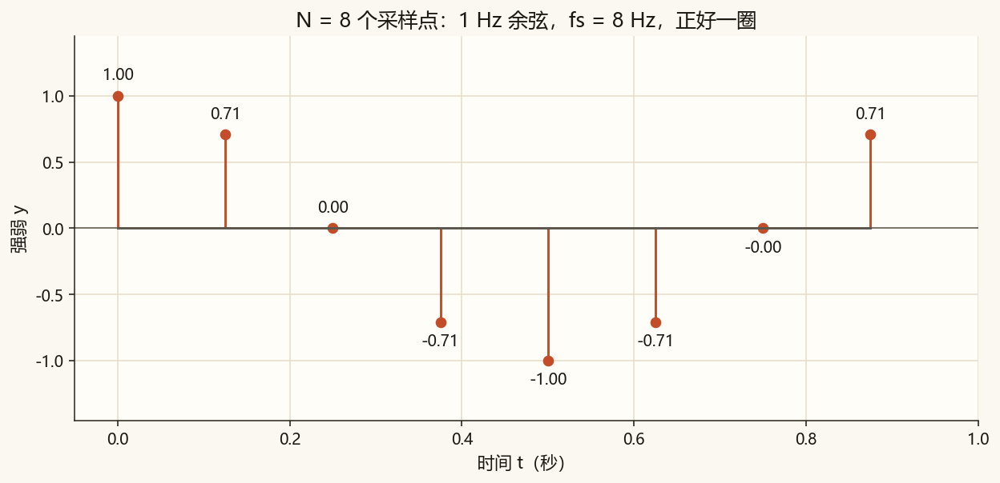
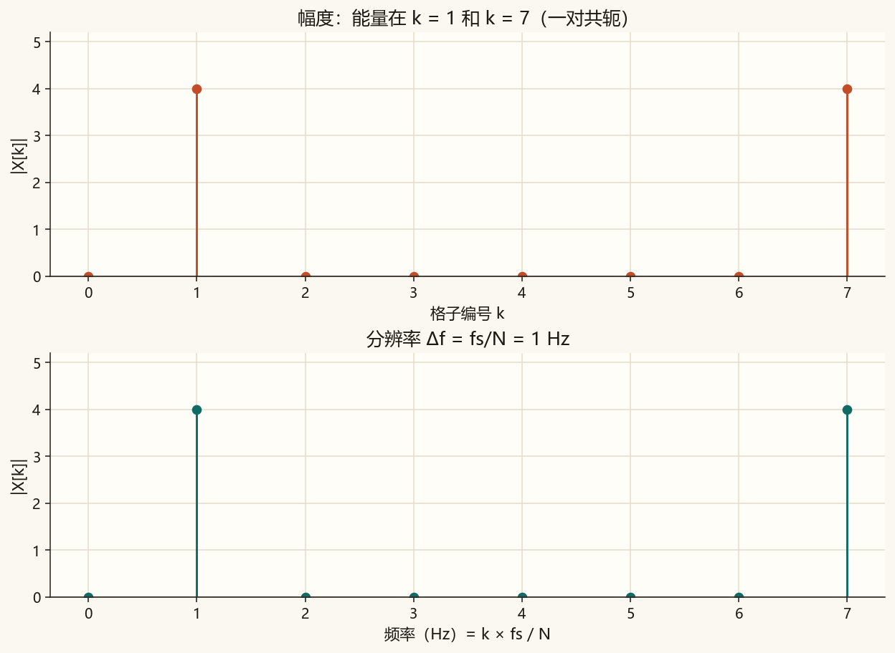
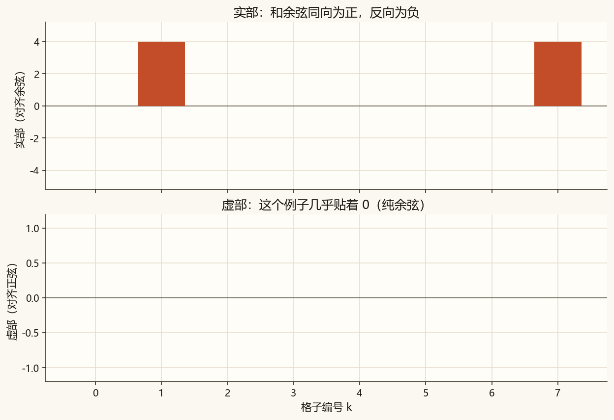
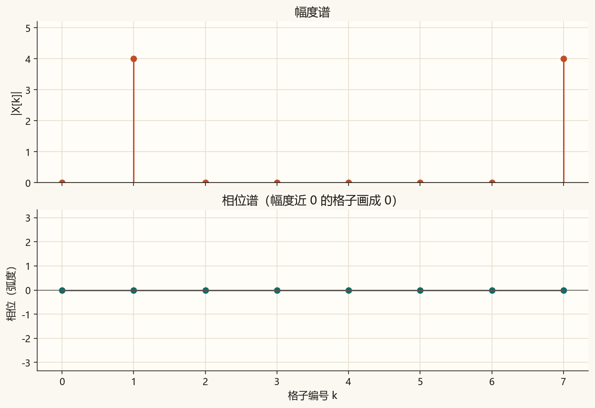
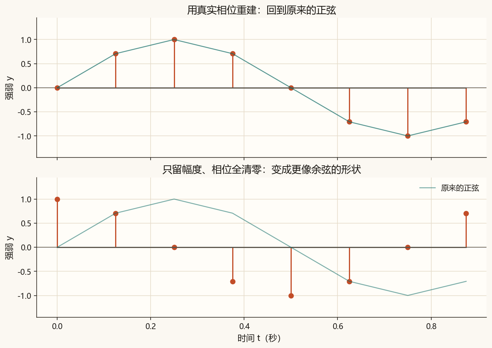
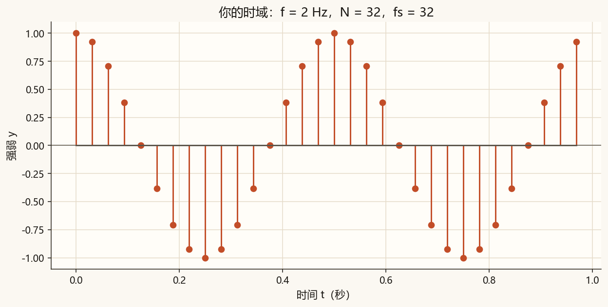
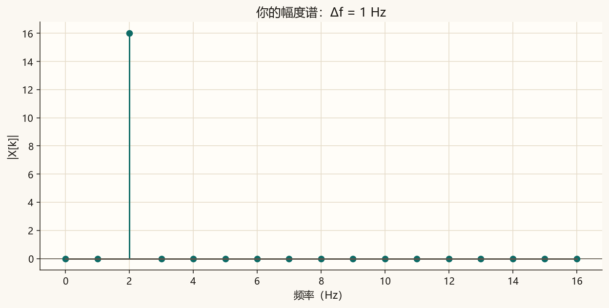

第 5 篇 · 有限个点 · 约 55 分钟
第 4 篇在一个连续周期上求平均。计算机里只有有限个采样点。这一篇把同样的「对齐」做成离散傅里叶变换：N 个点进去，N 个频率格子出来。先弄清「档位变多」为什么不是「频率变高」，再手算一个很小的例子，并看只有幅度、没有相位为什么拼不回原来的波形。
这一节只说一件事：你量了多少个时间点，频谱就只能分成同样多份「频率格子」（也叫频率档位）。
取 N 个采样点，采样率是 fs。离散傅里叶变换（DFT）给出 N 个复数 X[0]、X[1]、…、X[N−1]。DFT 要能完整变回原来的 N 个点，信息量要对得上，所以档位数等于点数。每个编号 k 对应一个频率格子：
fₖ = k × fs / N 格子间距 Δf = fs / N
Δf 叫频率分辨率：再细的频率差别，这 N 个点也分不开。总时长大约是 T = N / fs，也可以记成 Δf ≈ 1 / T——听得越久，越能分清「每秒多差了一小点圈数」。
课文固定例子：N = 8，fs = 8 Hz，于是 Δf = 1 Hz。八个时间点对应八个固定问题：有没有 0 Hz？有没有 1 Hz？……有没有 7 Hz？
| 格子 k | 频率 fₖ | 白话 |
|---|---|---|
| 0 | 0 Hz | 直流：整体抬高多少 |
| 1 | 1 Hz | 1 秒里正好一圈 |
| 2 | 2 Hz | 1 秒里两圈 |
| … | … | … |
| 7 | 7 Hz | 实信号里常作 k = 1 的镜像 |
信号是正好走完一圈的 1 Hz 余弦：
x[n] = cos(2π n / 8)，n = 0, 1, …, 7


会。44100 Hz 的音频录 1 秒有 44100 个点，录 10 秒有 441000 个点。若对整段做一次 DFT，档位数确实跟着 N 变多。容易误会的是：档位变多，并不是「能听到更高的频率」，而是同一段频率范围被切得更细。
采样率固定时，能表示的最高频率大约是 fs / 2（奈奎斯特频率）。变的是格子间距：
| 时长 | 点数 N | Δf = fs / N | 频率范围 |
|---|---|---|---|
| 1 s | 44100 | 约 1 Hz | 仍是 0～fs（有用的大约到 fs/2） |
| 10 s | 441000 | 约 0.1 Hz | 同上，只是格子更密 |
所以 10 秒那段能分清 440.0 Hz 和 440.1 Hz；1 秒那段大约只能分到 1 Hz 量级。尺子变长了，刻度更密，不是世界变大了。
实务里很少对整首歌做一次 DFT。常见做法是切固定长度的短窗（例如 2048 点），对每一窗做 DFT，再把窗口往后滑。这时：
频谱图（语谱图）可以记成：纵轴（频率档）由窗长定，横轴（时间格）由帧数定。第 8 篇会专门练帧长、步长和重叠。
一句话：理论 DFT 是 N 进 N 出，越长档越密、频率范围不变；实际听感分析常用固定窗长，时长只影响有多少帧。
第 4 篇问：波形和标准正弦、余弦有多齐。DFT 对每个格子 k 做同一件事，只是换成离散求和：
X[k] = Σₙ x[n] · (cos θ − j sin θ)， θ = 2π k n / N
Σₙ 表示 n 从 0 加到 N−1。可以读成三句：

脚本里的慢速 DFT 就是两层循环：外层扫 k，内层扫 n，按上面相乘累加。算完再和 numpy.fft.fft 比一次，最大绝对误差应接近 0。
先看更短的 N = 4，信号 x = [1, 0, −1, 0]。它是 cos(π n / 2) 的四个点。手算时角度是 2π k n / 4 = π k n / 2。
| k | 频率 (fs=4) | 实部 | 虚部 | |X[k]| |
|---|---|---|---|---|
| 0 | 0 Hz | 0 | 0 | 0 |
| 1 | 1 Hz | 2 | 0 | 2 |
| 2 | 2 Hz | 0 | 0 | 0 |
| 3 | 3 Hz | 2 | 0 | 2 |
再看课文的 N = 8 余弦。对实信号，X[N−k] 是 X[k] 的共轭，所以 k = 1 和 k = 7 成对出现。
| k | fₖ (Hz) | 实部 | 虚部 | |X[k]| |
|---|---|---|---|---|
| 0 | 0 | 0 | 0 | 0 |
| 1 | 1 | 4 | 0 | 4 |
| 2 | 2 | 0 | 0 | 0 |
| 3 | 3 | 0 | 0 | 0 |
| 4 | 4 | 0 | 0 | 0 |
| 5 | 5 | 0 | 0 | 0 |
| 6 | 6 | 0 | 0 | 0 |
| 7 | 7 | 4 | 0 | 4 |
为什么是 4 不是 1？DFT 常用「不除以 N」的写法，一对共轭各贡献 N/2。除以 N 之后，幅度才回到时域振幅 1 附近。这一课先盯住格子编号和对齐，归一化放到后面用。
每个 X[k] 可以拆成幅度和相位。幅度谱告诉你「哪些频率有多重」；相位谱告诉你「各分量的波峰怎么对齐」。

若只留下幅度、把相位全部清零，再变回时域，波形会对不上。第 3 篇说过相位不在柱高上。下面改用同频率的正弦：幅度谱和余弦几乎一样，相位不同。

下面固定 8 个点。拖动「频率格子」，合成 cos(2π k₀ n / 8)。幅度谱应在 k₀ 和 8−k₀ 出现高峰；相位在有能量的格子上接近 0（纯余弦）。
k₀ = 0 是直流，八个点都是 1，能量全在 k = 0。k₀ = 4 是 Nyquist，点在 1 与 −1 之间跳。k₀ = 1 就是课文例子。
慢速 DFT 的骨架如下。完整脚本在 code/ch05_dft.py。
def slow_dft(x):
N = len(x)
X = np.zeros(N, dtype=complex)
for k in range(N):
for n in range(N):
angle = 2 * np.pi * k * n / N
X[k] += x[n] * (np.cos(angle) - 1j * np.sin(angle))
return Xpython code/ch05_dft.py终端里应出现「自检通过」，以及慢速 DFT 与 numpy.fft.fft 的最大绝对误差（接近 0）。还会打印 N = 8 每个格子的实部、虚部和幅度。课文图是 ch05_samples.png、ch05_bins.png、ch05_real_imag.png、ch05_mag_phase.png、ch05_phase.png。你的图 ch05_mine_wave.png、ch05_mine_mag.png 只跟随顶部的 FREQUENCY 和 N_MINE。
若终端中文是乱码，先执行 chcp 65001。图照样会保存。
code/ch05_dft.py。默认 FREQUENCY = 2.0，N_MINE = 32，SAMPLE_RATE_MINE = 32.0，于是 Δf = 1 Hz，2 Hz 正好落在格子上。FREQUENCY 改成 2.3，运行。打开 ch05_mine_mag.png：主峰附近会摊开一点——频率没落在格子中心。这就是下一篇要细讲的泄漏的苗头。FREQUENCY 改回 2.0，把 N_MINE 改成 64（可把 SAMPLE_RATE_MINE 也改成 64 保持时长 1 秒），再运行：格子更密。FREQUENCY = 2.0，N_MINE = 32，SAMPLE_RATE_MINE = 32.0。

Δf = fs/N = 1 Hz。k = 3 对应 3 Hz。
频率范围仍大约到 fs/2，只是格子更密（Δf 从约 1 Hz 到约 0.1 Hz）。实务里常用固定窗长切帧做 DFT：窗长定每帧档位数，步长和总长定帧数；歌越长主要是帧数变多。
实部对齐「转了 k 圈的余弦」，虚部对齐「转了 k 圈的正弦」（公式里正弦项带负号）。幅度表示强弱，相位表示波峰怎么偏。
幅度丢掉了相位。相位清零后再变回时域，点的个数还在，起伏形状会变。图 5-5 用正弦对照：清零后更像余弦。
慢速双重循环在点数变大时会很慢。下一篇看 FFT 怎样更快地算出同一个 DFT，用逆变换走一个来回，并处理频谱泄漏和窗函数。